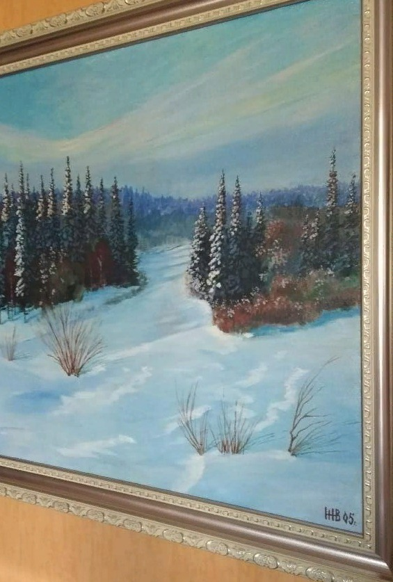

Отчёт
первое полугодие
2019
 Копырина
Копырина
Лариса
Валентиновна
Бригада №16
Нас – 15 человек, все члены профсоюза

 доверяет коллективу
Похорукова
доверяет коллективу
Похорукова
Елена
Николаевна
-
УЛОТ: Алексеев А. Е.
-
ОИБД: Автахов А. А.
-
Сантройка:
Подкина Н. Ю., Спиридонова И. М., Исакова Л. В.
В бригаде только Автахов А. А.
младше 35 лет
Активный сотрудник
Жданов Н. В. стреляет из лука и рисует

Хвалыбова Т. С. пишет стихи
| ФИО |
На больничном |
| Айсвирт И. М. |
38 дней |
| Алексеев А. Е. |
32 дня |
| Автахов А. А. |
50 дней |
| Жданов Н. В. |
5 дней |
| Копырина Л. В. |
28 дней |
| Калугина И. И. |
8 дней |
| Епифанова Л. А. |
13 дней |
| Подкина Н. Ю. |
10 дней |
| Шаньгина С. А. |
14 дней |
В праздничном рейсе за счет средств поездной бригады
поздравили участника ВОВ
Жданов Н. В.
Епифанова Л. А.
| Праздник |
Мероприятие |
| День проводника |
Тренинг по продажам
Котедж "Гейзер" |
| День железнодорожника |
База "Дикий Урал" |
Отзывы